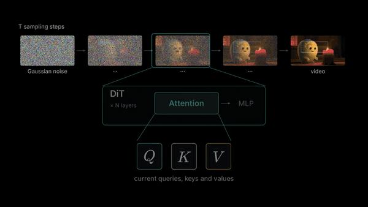
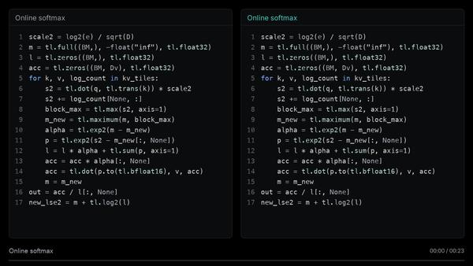
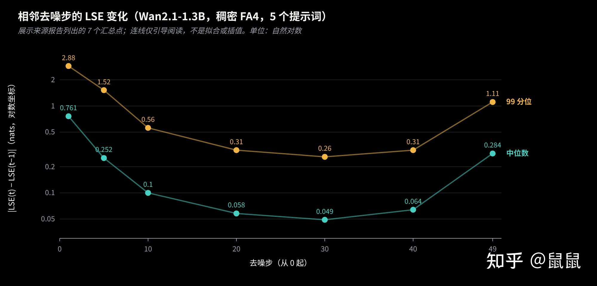
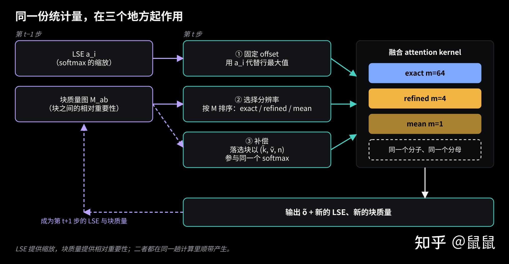
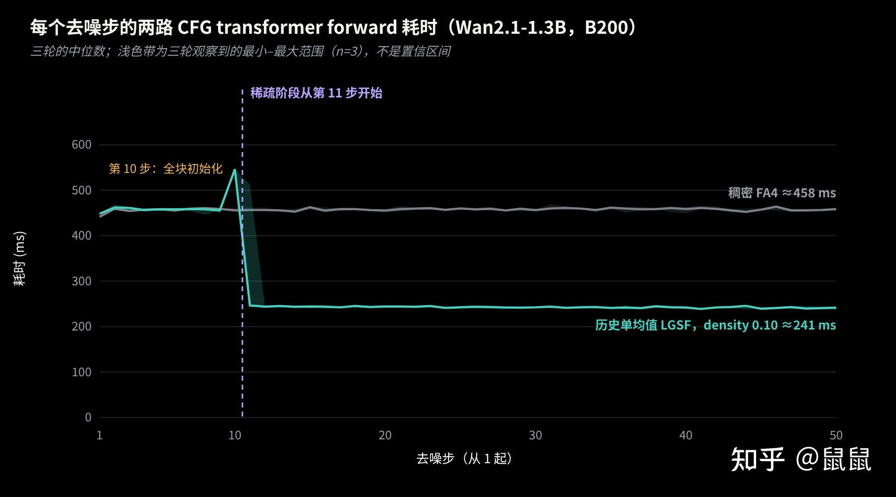
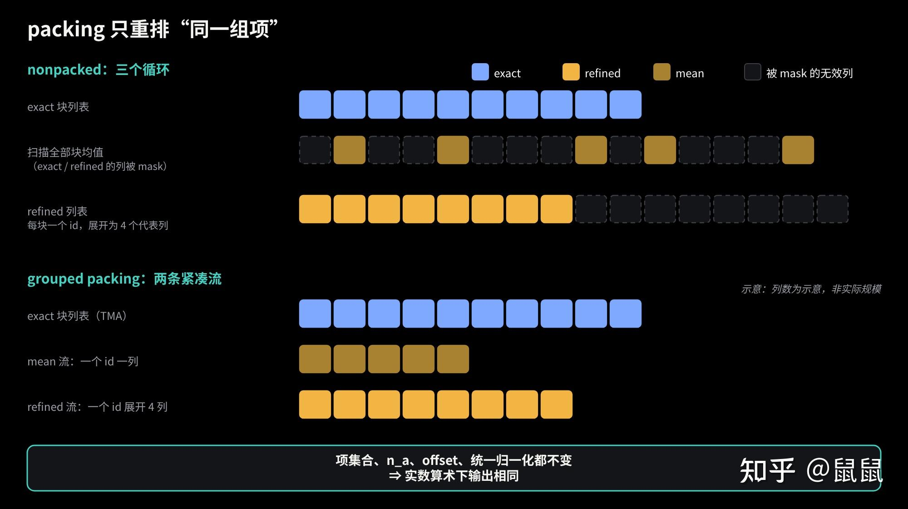
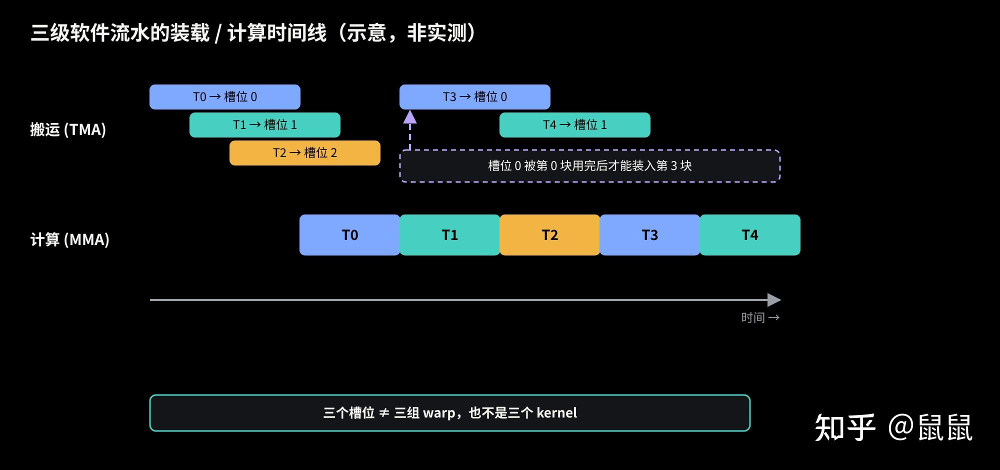
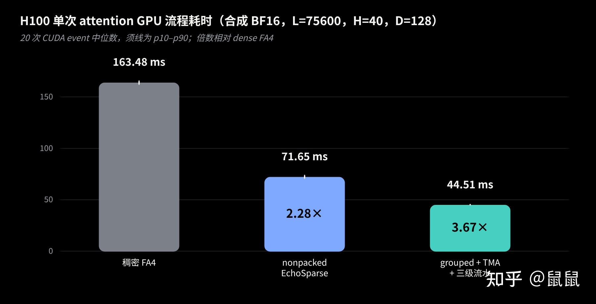
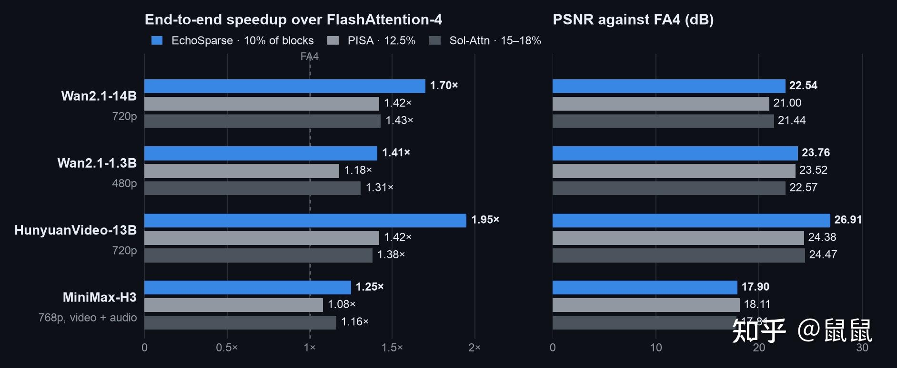
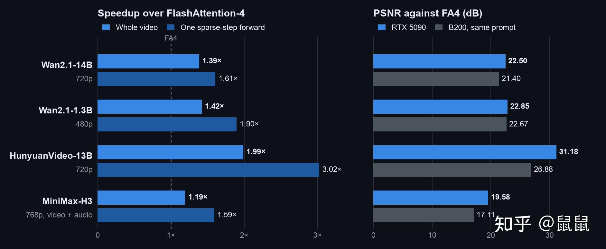

关于近似稀疏注意力的进一步思考：EchoSparse
这边来宣传一下我们最近做的一个稀疏注意力的工作：
- EN blog: w2genai-lab.github.io/blog/EchoSparse/blog.html
- ZH blog: w2genai-lab.github.io/blog/EchoSparse/zh.html
- github: github.com/W2GenAI-Lab/EchoSparse-Attn
Wan2.1-14B 生成 720p、81 帧的视频，单层 attention 就要处理约 7.56 万个 token。不过一个 query 并不会同样关注所有位置，那么一个query就几乎可以删掉大部分KV块。
LLM和Diffusion里已经有不少这样的做法了，比如VSA、Radial Attn、PISA、STA等（对于Diffusion来说），SWA、GDN、KDA 这些线性 attention（对于LLM来说），但是视频这个理论上冗余的信息，其实并不好直接丢弃，这也就是为什么linear attention这种方法很难用到video上的原因。
所以我们沿着 PISA 和 Sol-Attn 的想法继续做。Haopeng Li 等人的 PISA（论文，代码）没有把落选块直接丢掉，而是用 Taylor 展开来近似；Sol-Attn（项目页，论文）也会给这些块补一个零阶项，还把 token 对池化块的 score tile 用在了路由上。这样重要的块照常算，其余块算得粗一些，补偿项仍然进入同一个分子和分母。多个代表拼起来做 GEMM，这两项工作里也已经有了。
EchoSparse 主要接着做了下面几件事：
- 复用上一步的统计量。 相邻两步去噪的统计量往往很接近，上一步的 LSE 和 block mass 就可以接着用。LSE 给本步 softmax 一个固定偏移，原来每个 KV tile 都要做的 max、缩放系数和旧累积量 rescale 就能去掉；block mass 则用来判断哪些块值得多算一点。
- 给代表数多几个选择。 一个块不一定只能压成 1 个代表，也可以是 2、4、8，一直到原来的 64 个 token。代表多一些，就少近似一点，但也要多算一些。现在实际用了 1、4、64 三档。
- 把代表放在一起算。 比如这里有 1 列，那里有 1 列，另外一个块有 4 列，就没必要分成三次小计算。把它们合成 $1+1+4$ 列，数学上还是同一个计算。真正麻烦的是搬运、拼接和同步的开销，这些也得一起处理。

1. 一个 KV 块可以被算成什么样（baseline PISA介绍）
下面只看一个 query tile 和一个 KV 块。记序列长度为 $N$，key 和 value 的维度分别是 $d,d_v$，query tile 有 $B_q$ 行，KV 块有 $B_k$ 个 token。块 $b$ 用多少个代表，就记成 $m_b$。本文用到的形状是 $B_q=128$、$B_k=64$、$d=d_v=128$，于是 $Q\in\mathbb R^{B_q\times d}$、$K_b\in\mathbb R^{B_k\times d}$、$V_b\in\mathbb R^{B_k\times d_v}$，精确计算写成
$$S_b=\frac{QK_b^\top}{\sqrt d}\in\mathbb R^{B_q\times B_k},\qquad P_b=\exp\bigl(S_b-c\,\mathbf 1^\top\bigr),\qquad \mathcal N\mathrel{+}=P_bV_b,\qquad \mathcal D\mathrel{+}=P_b\mathbf 1 .$$这里 $c\in\mathbb R^{B_q}$ 是每行的偏移，$\mathcal N\in\mathbb R^{B_q\times d_v}$ 和 $\mathcal D\in\mathbb R^{B_q}$ 分别累加分子、分母。所有块算完，再做一次 $O=\mathrm{diag}(\mathcal D)^{-1}\mathcal N$。
为了方便数计算量，可以把它简写成 $(B_q\times d)(d\times B_k)(B_k\times d_v)$。不过这只是尺寸上的写法，中间的指数和归一化还在，不能真当成三个矩阵随便连乘。一个块大致就有三种处理方式：
- exact：先算 $(B_q\times d)(d\times B_k)$，得到 $B_qB_k$ 个 logit，做完指数再乘 $(B_q\times B_k)(B_k\times d_v)$。要读 $B_k(d+d_v)$ 个元素，大约 $2B_qB_k(d+d_v)$ FLOPs。
- drop：直接跳过这个块，相当于 $B_k\to0$。计算省掉了，但它在分子和分母里的贡献也一起没了。
- 一个代表：只做 $(B_q\times d)(d\times1)$ 和 $(B_q\times1)(1\times d_v)$。读 $d+d_v$ 个元素，大约 $2B_q(d+d_v)$ FLOPs，只有 exact 的 $1/B_k$。
零阶近似与 count
对一行 query $q$，假设块里有 $n_b$ 个有效 token。通常 $n_b=B_k$，最后一个块可能少一些。把 K、V 的均值，以及 logit 相对均值的偏移记成
$$\bar k=\frac1{n_b}\sum_{j}k_j,\qquad \bar v=\frac1{n_b}\sum_j v_j,\qquad \bar s=\frac{q^\top\bar k}{\sqrt d},\qquad \delta_j=\frac{q^\top(k_j-\bar k)}{\sqrt d}.$$这样就有 $s_j=\bar s+\delta_j$，而且 $\sum_j\delta_j=0$。这个块原来的贡献可以拆成
$$\sum_j e^{s_j}=e^{\bar s}\sum_j e^{\delta_j},\qquad \sum_j e^{s_j}v_j=e^{\bar s}\sum_j e^{\delta_j}v_j .$$如果只保留零阶，也就是把 $e^{\delta_j}$ 换成 1，就得到
$$\mathcal D_b^{(0)}=n_b\,e^{\bar s}=e^{\bar s+\ln n_b},\qquad \mathcal N_b^{(0)}=e^{\bar s}\sum_j v_j=n_b\,e^{\bar s}\,\bar v .$$所以一个代表里除了 $\bar k,\bar v$，还得带上 $n_b$。它代替了 $n_b$ 个 token，分子和分母里当然都要算 $n_b$ 份。实现时把这个数放进 logit 就很方便，直接加 $\ln n_b$ 即可。换成 $\exp_2$ 就是加 $\log_2 n_b$，64 个 token 对应 6。如果漏掉这个数，整块权重会小 64 倍，已经不是原来想要的近似了。
一阶和二阶
零阶只留下了均值，想做得更准一些，就把 $e^{\delta}=1+\delta+\tfrac12\delta^2+\cdots$ 继续往下展开。一阶的分母修正 $\sum_j\delta_j$ 刚好为零，但分子的修正还在：
$$\sum_j\delta_j v_j=\frac{H^\top q}{\sqrt d},\qquad H=\sum_j (k_j-\bar k)\,v_j^\top\in\mathbb R^{d\times d_v},$$ $$\mathcal N_b^{(1)}=e^{\bar s}\Bigl(\sum_j v_j+\frac{H^\top q}{\sqrt d}\Bigr),\qquad \mathcal D_b^{(1)}=n_b\,e^{\bar s}.$$均值代表没有保留的，正是 $H$ 里这部分 key 偏移与 value 的关联。再往二阶走，还会多出
$$C=\sum_j (k_j-\bar k)(k_j-\bar k)^\top\in\mathbb R^{d\times d},\qquad T=\sum_j (k_j-\bar k)\otimes(k_j-\bar k)\otimes v_j\in\mathbb R^{d\times d\times d_v},$$ $$\mathcal D_b^{(2)}=e^{\bar s}\Bigl(n_b+\frac{q^\top Cq}{2d}\Bigr),\qquad \mathcal N_b^{(2)}=\mathcal N_b^{(1)}+\frac{e^{\bar s}}{2d}\,T(q,q,\cdot).$$这些矩如果都按块存下来，大小就不太好忽略了。还是取 $B_k=64$、$d=d_v=128$：
| 每块的摘要 | 缓存内容（元素） | 数值 | 每个 query 的应用代价 |
|---|---|---|---|
| 原始 K_b,V_b（exact） | B_k(d+d_v) | 16,384 | O(B_k(d+d_v)) |
| 零阶 \bar k,\bar v,n_b | d+d_v+1 | 257 | O(d+d_v) |
| 一阶 H | dd_v | 16,384 | O(dd_v) |
| 二阶 C,T | d^2+d^2d_v | 2,113,536 | O(d^2d_v) |
一阶矩 $H$ 有 $128\times128$ 个元素，刚好和原始 K/V 块的 $64\times256$ 一样大。把它作用到一个 query tile 上，还是一次 $(B_q\times d)(d\times d_v)$ 的乘法，FLOPs 也已经和精算差不多了。二阶更大，单是 $T$ 就有 $2{,}097{,}152$ 个元素，是原始块的 128 倍。利用两个 key 下标的对称性，能降到约 106 万，但还有 64.5 倍。当然，也可以不缓存、重新读 token，或者再做低秩近似，只是省下的存储就换成了计算或另一层近似。
PISA 没有按上面这个方式逐块搬运一阶矩。它用了逐块零阶加全局一阶的 hybrid。记落选块为 $\mathcal U$，在满块等长的情况下，可以把它的想法示意写成：将 $\sum_{b\in\mathcal U}e^{\bar s_b}H_b^\top q/\sqrt d$ 换成 $(\sum_{b\in\mathcal U}e^{\bar s_b})\bar H^\top q/\sqrt d$。$\bar H$ 提前在整个序列上汇总好，不用跟着每个 query 的 $\mathcal U$ 重算，attention 循环也就只读这一份全局矩阵；尾块在代码里另做 count 缩放。上面的二阶表只是按直接缓存算的一笔账，PISA 本身没有在 kernel 里存逐块二阶张量，它在相关工作中讨论的是 Based、power attention 这类展开的维度问题。
EchoSparse 选的是另一个办法：先不增加展开阶数，把块多分几组。每组还是用零阶近似，只是代表数 $m_b$ 不再固定为 1。这个后面再展开。
2. LSE 复用
FlashAttention 按 KV tile 往后算时，最大值也得跟着更新。下面统一写成 base-2，$s_{ij}$ 已经乘过 $\log_2 e$。那么每来一个 tile，每行都要做
$$ \begin{aligned} m_i^{\text{new}}&=\max\bigl(m_i,\ \max_j s_{ij}\bigr),\qquad \alpha_i=2^{\,m_i-m_i^{\text{new}}},\qquad p_{ij}=2^{\,s_{ij}-m_i^{\text{new}}},\\ \ell_i&\leftarrow\alpha_i\,\ell_i+\sum_j p_{ij},\qquad O_i\leftarrow\alpha_i\,O_i+\sum_j p_{ij}v_j . \end{aligned} $$但如果一开始就给每行定好一个偏移 $\hat a_i$，后面不再改它，循环其实可以直接写成
$$p_{ij}=2^{\,s_{ij}-\hat a_i},\qquad \ell_i\leftarrow\ell_i+\sum_jp_{ij},\qquad O_i\leftarrow O_i+\sum_jp_{ij}v_j .$$EchoSparse 用的是上一去噪步同层、同 CFG 分支、同一行的 log2 LSE。把固定偏移路径和 online 回退路径放在一起，差别会更直接一些。
这里取 BM=128、BN=64、D=Dv=128，scale2=log2(e)/sqrt(D)。log_count 对原始 token 是 0，对代表是 $\log_2 n$。实际主线的 SM120 会把 64-token 块分成两个 32-key 半块，H100 实验路径用的是 64 宽 tile。

# Online softmax
m = tl.full((BM,), -float("inf"), tl.float32)
l = tl.zeros((BM,), tl.float32)
acc = tl.zeros((BM, Dv), tl.float32)
for k, v, log_count in kv_tiles:
s2 = tl.dot(q, tl.trans(k)) * scale2 + log_count[None, :]
block_max = tl.max(s2, axis=1)
m_new = tl.maximum(m, block_max)
alpha = tl.exp2(m - m_new)
p = tl.exp2(s2 - m_new[:, None])
l = l * alpha + tl.sum(p, axis=1)
acc = acc * alpha[:, None]
acc = tl.dot(p.to(tl.bfloat16), v, acc)
m = m_new
out = acc / l[:, None]
new_lse2 = m + tl.log2(l)
# Fixed offset
prior2 = tl.load(PREV_LSE2 + rows * H + head)
l = tl.zeros((BM,), tl.float32)
acc = tl.zeros((BM, Dv), tl.float32)
for k, v, log_count in kv_tiles:
s2 = tl.dot(q, tl.trans(k)) * scale2 + log_count[None, :]
p = tl.exp2(s2 - prior2[:, None])
l += tl.sum(p, axis=1)
acc = tl.dot(p.to(tl.bfloat16), v, acc)
out = acc / l[:, None]
new_lse2 = prior2 + tl.log2(l)删掉的工作其实不少：
- 128 行，每行 64 个元素的 max 归约，逻辑上约有 $128\times63$ 次比较，之后还要和运行最大值再比一次。
- 128 个 $\alpha_i=2^{m_i-m_i^{\text{new}}}$。不过 $128\times64=8192$ 个 score 的 $\exp_2$ 还是要算的。
- 旧分母的 128 个元素，以及旧输出的 $128\times128=16{,}384$ 个 FP32 元素，都不用再乘 $\alpha$。
只算一个 tile 还不明显，但这些操作会随着 KV 循环反复执行。按平均 118 个 exact 块算，仅输出累积器的重缩放就接近 190 万次乘法。它们是在片上做的，不是说少了这么多显存访问；逻辑上的元素数也不等于机器指令数。相比之下，历史 LSE 只在循环前读一次，128 行总共 512 字节。QK、逐 score 的指数、行和、PV，以及最后用本步分母归一化，都还保留着。
还有一个问题是依赖关系：
online: S ──> row max ──> m_new ──> exp2(S - m_new) ──> P·V ──┐
└──> alpha ──> scale old O ───────┴──> O
fixed: S ──────────────────────> exp2(S - prior) ──> P·V ──────> Oonline 版本的指数要等 max 归约做完，新的 PV 也要等旧 $O$ 缩放完才能累加。这两段正好夹在矩阵乘之间，Tensor Core 算得再快，也绕不过这个等待。固定偏移以后，剩下的是 $S\to\exp_2\to PV$，和搬运、下一轮 QK 做重叠就容易一些。
在 B200 的 CuTe DSL 实现里，这个区别还能直接体现在累积器上。$O$ 留在 TMEM，后续 PV 一直往同一块 tO 上加，第一次清零就够了。中间仍然要读 score、减 LSE、算 $\exp_2$，再把 BF16 的 P 写回，但不必每轮把 $O$ 取出来做行缩放。等循环结束，才读出 $O$、除以本步行和，写出结果和新 LSE（源码）。
固定偏移为什么不改变结果
不过，用旧 LSE 做这个偏移，并不会再多一层近似。对同一组项，分子分母一起乘 $2^{-\hat a_i}$，比值本来就不变：
$$\frac{O_i}{\ell_i}=\frac{\sum_j 2^{s_{ij}-\hat a_i}v_j}{\sum_j 2^{s_{ij}-\hat a_i}}=\frac{\sum_j 2^{s_{ij}}v_j}{\sum_j 2^{s_{ij}}},\qquad \hat a_i+\log_2\ell_i=\log_2\sum_j2^{s_{ij}} .$$这里最后除的仍然是本步算出来的 $\ell_i$，并没有拿上一步的分母来代替。所以数学上，偏移取多少都可以；浮点实现则还要考虑范围和舍入。记本步的 log2 LSE 为 $\mathrm{lse}^{(2)}_i$，就有 $\ell_i=2^{\mathrm{lse}^{(2)}_i-\hat a_i}$。两步的 LSE 越接近，行和就越靠近 1，越不容易上溢或下溢。这也是我们要复用相邻去噪步统计量的原因。

从数据看，中间一段确实比较接近，中位数只变了 0.05 到 0.1 nats。开头和结尾就没这么平稳了，第 1、49 步的中位数分别是 0.76、0.28，p99 是 2.88、1.11，个别行甚至会差上百。因此实现里仍然留了检查：$\log_2\ell_i$ 超出约 $\pm60$，就对选中的 exact 块用 online softmax 重算，再加均值补偿，回退时不保留四代表形式。README 报告约 0.5% 的 tile 会触发；相同块列表下，固定偏移 kernel 的时间约少了 47%。
3. 多层级代表块
3.1 多层级表示
回到代表本身。把一个块分成 $m_b$ 组，每组各存一份 K/V 均值和实际 token 数，就得到 $m_b$ 个代表。这样原始 token 和代表都可以写成 $(\tilde k_a,\tilde v_a,n_a)$，放进同一个 softmax：
$$\tilde o=\frac{\sum_a n_a\,e^{\,q^\top\tilde k_a/\sqrt d}\,\tilde v_a}{\sum_a n_a\,e^{\,q^\top\tilde k_a/\sqrt d}} .$$- $m_b=1$：整块一个均值，$n=n_b$；
- $m_b=4$：四个 cluster，各自的 K/V 均值和 count；
- $m_b=64$：每个 token 一组，$n=1$，即 exact。
代表数也可以取 2、8、16、32，只是当前实现先用了 1、4、64。kernel 里出现的 16 行是四个 cluster 为 tl.dot 做的 padding，不是又加了一个 16 代表的档位。
这里的 count 和前面一样，分子分母都要乘。空 cluster 或 padding 的 $\ln n_a=-\infty$，自然就没有贡献了。也不能给 exact 和代表各算一个 softmax 再相加，否则每一部分都被单独归一化成 1，它们原来的相对权重就丢了。
多分几组，原来混在一个均值里的差别就能保留下来。比如一个只有 4 个 token 的块：logits 是 $s=(0,0,2,2)$，values 是 $v=(1,1,0,0)$，精确输出为 $2/(2+2e^2)\approx0.119$。如果全压成一个均值，平均 logit 是 1，count 是 4，输出就只剩平均 value，也就是 0.5。改成前两个一组、后两个一组，各自 count 为 2，结果就和原来一样了。原因并不复杂，每组里面的 logit 本来就相同，近似没有损失信息。所以增加代表数是在把组分细，不是在提高 Taylor 阶数；分到每组只有一个 token，自然就回到了 exact。
代价也跟着代表数涨：每块读取 $m_b(d+d_v)$ 个元素，大约 $2B_qm_b(d+d_v)$ FLOPs。但误差不会只由 $m_b$ 一个数决定，组内 logit 差多少、K 和 V 有没有相关性，都会影响结果。
3.2 如何选择 $m_b=1$、$4$、$64$
至于一个块该用 1 个代表、4 个代表，还是保留全部 64 个 token，就按 block mass 来分配。对 query tile $a$ 和块 $b$，记
$$M_{ab}=\sum_{i\in a}\sum_{j\in b}e^{\,s_{ij}-c_i},\qquad c_i=(\ln2)\,\hat a_i ,$$这里写的是自然对数单位，$s_{ij}=q_i^\top k_j/\sqrt d$，$c_i$ 是历史 LSE；它和前面的 log2 偏移满足 $c_i=(\ln2)\hat a_i$。因此 kernel 里的 $2^{s^{(2)}_{ij}-\hat a_i}$ 与这里的 $e^{s_{ij}-c_i}$ 是同一个数。历史 LSE 足够准时，$M_{ab}$ 就接近这些行分给块 $b$ 的概率之和。它还没有用本步的分母归一化，不能直接当成本步精确概率。
如果为了选块，再把所有块都完整打分一遍，那就又把计算补回去了。所以这张图尽量跟着本步计算一起产出：
- 选中的 exact 块，本来就要算 $p_{ij}$，顺手按 64-token 块加起来，就是它们的 $M_{ab}$。
- 落选块没有精确 score，就用
estimate_skipped在 query tile 里抽样几行，用块均值估计，再拿同一 tile 里精算过的块做校准，校准系数限制在 $[1,64]$。
这两部分合起来以后，还要按 tile 汇总 $\exp(c_i-\mathrm{LSE}^{\text{new}}_i)$ 做缩放，才能交给下一步。这里 $\mathrm{LSE}^{\text{new}}_i$ 是本步的自然对数 LSE，换成代码里的 log2 单位，就是 2^(prior2 - new_lse2)。
下一步就按这个质量排序。设块数为 $n_{\text{blk}}$、密度为 $\rho$，最大的 $\mathrm{round}(\rho n_{\text{blk}})$ 个块加上局部邻居用 exact；剩下大约三分之一、质量靠前的块用 4 个代表，其余用 1 个。这样没有块被完全删掉，只是不同的块算得有粗有细。目前这个预算是按质量分配的启发式，还不是从误差公式里逐块求出的最优解。

这些状态按 CFG 分支和层分别保存，后续 CFG 分支可以沿用分支 0 的块选择。开始时还没有历史质量图，所以前 9 步直接用 FA4，第 10 步让所有块通过固定偏移的 EchoSparse kernel，建立第一张图，第 11 步才开始稀疏计算。

3.3 聚类与误差
前面的例子里，同组 token 的 logit 刚好相同，所以没有近似误差。一般情况没有这么整齐，还是看一组 $C$，有 $n$ 个 token。记组均值为 $\bar k,\bar v$，$\bar s=q^\top\bar k/\sqrt d$，组内偏移为 $\delta_j=q^\top(k_j-\bar k)/\sqrt d$。普通均值给出了 $\mathbb E_C\delta=0$，于是精确分母和代表分母分别是
$$Z_C=n\,e^{\bar s}\,\mathbb E_Ce^{\delta},\qquad \widehat Z_C=n\,e^{\bar s},\qquad \mathbb E_Ce^{\delta}=1+\tfrac12\mathbb E_C\delta^2+O\bigl(\mathbb E_C|\delta|^3\bigr).$$一阶项刚好抵消，剩下的主项就是组内 logit 方差。再假设 $|\delta_j|\le r$，用 Taylor 余项 $e^\delta-1-\delta=\tfrac12\delta^2e^\xi$，还能得到
$$0\le Z_C-\widehat Z_C\le\frac{n\,e^{\bar s+r}}{2}\,\mathbb E_C\delta^2 .$$左边非负是 Jensen 不等式，所以只用均值时，这一组的分母总会被低估一些。不过分子里还有 value，展开后多了一项：
$$\mathcal N_C-\widehat{\mathcal N}_C=n\,e^{\bar s}\Bigl[\mathrm{Cov}_C(\delta,v)+\tfrac12\,\mathbb E_C\bigl(\delta^2v\bigr)+\cdots\Bigr].$$括号里的第一项就是 $H_C^\top q/(n\sqrt d)$，也就是前面的一阶相关项。把整个块的 $H_b$ 按分组拆开，会发现它刚好分成两部分：
$$H_b=\sum_C H_C+\sum_C n_C\,(\bar k_C-\bar k_b)(\bar v_C-\bar v_b)^\top .$$多个代表保留了各组中心，所以组间差异可以直接通过这些中心的指数算出来，不必再用一个 $d\times d_v$ 的矩阵存它。近似还在每一组内部，来自组内的 $H_C$、方差以及更高阶项。每组只有一个 token 时，这些项就都没了。相比逐块存一个 $dd_v$ 的矩，花几列保留组间差异，至少在存储上要合适得多。
既然分母误差跟组内 logit 方差有关，我们就可以先把这个方差压小。把当前 head 的所有 query 按行放成 $Q\in\mathbb R^{N\times d}$，对一个 $B_k$-token 块 $b$，记它的分组为 $\mathcal C_b$，$\Delta k_j=k_j-\bar k_C$。对 query 和块内 token 一起求平均，目标就是
$$J_b=\frac1{NB_k}\sum_{i=1}^N\sum_{C\in\mathcal C_b}\sum_{j\in C} \left(\frac{q_i^\top\Delta k_j}{\sqrt d}\right)^2 .$$直接照这个式子算，每改一次分组，都得再遍历所有 query。但 query 本身没有变，这部分求和其实可以先提出来：
$$ \begin{aligned} G&=\frac1{Nd}\sum_{i=1}^N q_iq_i^\top=\frac{Q^\top Q}{Nd},\\ J_b&=\frac1{B_k}\sum_{C\in\mathcal C_b}\sum_{j\in C}\Delta k_j^\top G\,\Delta k_j . \end{aligned} $$这样一来，所有 query 的影响就收进了一个 $d\times d$ 的 $G$。算 $Q^\top Q$ 是一次 Gram 矩阵乘，可以用 Tensor Core；$d=128$ 时输出也只有 $128\times128$。它是 $O(Nd^2)$ 的计算，而完整 $QK^\top$ 是 $O(N^2d)$。每次 attention 调用，一个 head 算一份 $G$ 就够了，后面的 KV 块和聚类迭代都能复用，不用跟着 query tile 重算。
但直接比较 $\Delta k^\top G\Delta k$，每个点和中心之间还是要做 $O(d^2)$ 的计算。这里可以再做一步 Cholesky 分解，把对称正定矩阵写成下三角矩阵与其转置的乘积。考虑到 $G$ 可能有 query 没覆盖到的零方向，实际先加一点对角正则：
$$G_\epsilon=G+\epsilon I=MM^\top,\qquad \epsilon=10^{-3}\frac{\operatorname{tr}(G)}d .$$那么这个二次型就变成了普通的平方长度：
$$ \begin{aligned} \Delta k^\top G_\epsilon\Delta k &=\Delta k^\top MM^\top\Delta k=\|M^\top\Delta k\|^2,\\ &=\Delta k^\top G\Delta k+\epsilon\|\Delta k\|^2 . \end{aligned} $$所以只要提前把 key 变成 $x_j=M^\top k_j$，后面直接算欧氏距离就行。代码里 key 按行存，于是写成 $X=KM$。线性变换也保留均值，$\bar x_C=M^\top\bar k_C$，刚才的目标就成了
$$ \begin{aligned} J_{b,\epsilon} &=J_b+\frac\epsilon{B_k}\sum_{C\in\mathcal C_b}\sum_{j\in C}\|\Delta k_j\|^2,\\ &=\frac1{B_k}\sum_{C\in\mathcal C_b}\sum_{j\in C}\|x_j-\bar x_C\|^2 . \end{aligned} $$这下就和普通 k-means 接上了。Cholesky 是 $O(d^3)$，但只分解这个小矩阵，$M$ 对整个 head 共用；$KM$ 也在聚类前做一次即可。后面每轮只用比较块内 64 个点和 4 个中心，变成 $O(B_km_bd)$，这里面已经没有 query 数 $N$ 了。也就是说，不必为每次分组重新算一大堆 query-key 偏差，先统计 Gram、变换 key，再做小规模聚类就可以了。
实际还加了 64 个 probe query，给块里的 token 一个权重，让常被关注的 token 对分组影响大一些。初始化是四个连续的 16-token 组，最多做 6 轮加权 Lloyd。这里加权的是聚类中心，分好组之后，写回去的 K/V 仍然取普通均值，$n_a$ 也仍是真实 token 数。这个加权分组是基于上述度量的启发式，最终 attention 误差还得考虑 K/V 相关性和统一归一化。
4. Packing：把 1+1+4 拼成 6 列
到这里，计算列数已经少了很多。以 $N=75600$ 为例，共有 1182 个 64-token 块，padding 后容量是 75648。密度 0.10 时，exact 大约 118 块，也就是约 7.6 千列。其余约 1064 块，355 块左右用四代表，共 1420 列；剩下约 709 块各占 1 列，压缩部分加起来约 2129 列。每个 query tile 总共约 9.7 千列，还不到 dense 的 13%。但这些列并不整齐，有的块只有 1 列，有的块是 4 列。
那么就没必要挨个做 $(B_q\times d)(d\times1)$、$(B_q\times d)(d\times4)$ 这种小乘法了。比如两个块各有一个代表，第三个块有四个，完全可以一起凑成 $1+1+4$ 列。把它们的 K、V 和 count 按相同顺序拼起来：
$$ K_*=\begin{bmatrix}\bar k_1^\top\\ \bar k_2^\top\\ K_3^{(4)}\end{bmatrix}\in\mathbb R^{6\times d},\qquad V_*=\begin{bmatrix}\bar v_1^\top\\ \bar v_2^\top\\ V_3^{(4)}\end{bmatrix}\in\mathbb R^{6\times d_v},\qquad n_*=(n_1,\,n_2,\,n_{3,1},\,\dots,\,n_{3,4}) . $$计算就写成
$$S=\frac{QK_*^\top}{\sqrt d}\in\mathbb R^{B_q\times6},\qquad W=\exp\bigl(S-c\,\mathbf 1^\top+\mathbf 1\,(\ln n_*)^\top\bigr),$$ $$\mathcal N\mathrel{+}=WV_*,\qquad \mathcal D\mathrel{+}=W\mathbf 1,\qquad O=\mathrm{diag}(\mathcal D)^{-1}\mathcal N .$$这里 $c_i=(\ln2)\hat a_i$，还是自然对数单位的历史 LSE。为什么能这样拼，其实从矩阵乘法就能看出来：$QK_*^\top$ 只是把原来三个小结果按列放在一起，指数和 count 修正也都逐列做。记 $W=[W_1\ W_2\ W_3]$，便有
$$WV_*=W_1\bar v_1^\top+W_2\bar v_2^\top+W_3V_3^{(4)},\qquad W\mathbf 1=W_1\mathbf 1+W_2\mathbf 1+W_3\mathbf 1 ,$$所以还是把三个块的分子、分母贡献加到同一个 $\mathcal N,\mathcal D$ 里。count 得跟着对应的列走，exact token 也一起加进来，最后只归一化一次。要是各块先做完 softmax 再相加，就把每块都归一化成 1 了，那当然是另一回事。
只要稀疏计划、代表 K/V、count 和归一化方式都没变，packing 就只是换了计算的分组，数学上输出相同。原来相对 dense 的近似仍然来自代表压缩，packing 没有再加一层近似。浮点求和换了顺序，舍入结果会有细微差别。
当然，6 列还不够喂满 Tensor Core，实际得继续跨块拼。实验分支一轮处理 128 列，均值流一次取 128 个块的均值，四代表流一次取 32 个块。这样主要只剩每条流最后一轮需要 mask。
对照已发布的 nonpacked 路径，它有三个循环：先算 exact，再扫描全部块的均值，把 exact 和四代表块的位置 mask 掉，最后再算四代表列表。均值按 128 列一组，四代表每块一个 id，列表还得补到固定宽度。这个计划实际会走 1280 个均值列、1536 个代表列，共 2816 列，真正有用的平均只有 2129 列，约 76%。mask 可以省掉无效数据的加载，却不能让 MMA 按比例变小，因为它仍然以固定形状发射。

grouped packing 就把它们整理成两条紧凑的 descriptor 流：均值块一个 id 对应一列，四代表块一个 id 对应四列，在片上按 $4\cdot\text{block}+\text{sub}$ 展开。更早的逐列 packed 流会给四个代表分别存 id，现在只存一个块 id；nonpacked 的四代表列表原本也是每块一个 id。分成两条流后，也不用在混合 tile 里对两个源张量都做 masked load。
不过这里打包的还是 descriptor 和索引，代表 K/V 并没有先拷成一个连续的大张量，取数据时依然要 gather。
5. 搬运与流水
想连续搬运的话，也可以先把代表都拷到一起。不过拷贝本身要读一次、写一次，kernel 还要再读一次，而且每个 query tile、每个 head 选的列都不一样。按平均 2129 列、每列 $d+d_v=256$ 个 BF16 估算，一个 tile 就有约 1.09 MB，591 个 query tile 再乘 40 个 head，全部物化一遍要写约 26 GB。同一计划的 NCU 测量里，主 kernel 的 DRAM 读取总量才约 9.7 GB。
不拷贝也不等于没有开销。小块搬运还要处理地址、descriptor、对齐、barrier 和 shared memory 缓冲。每次只有几列，这些固定成本就不太好摊。所以还是要先把有效列凑起来，再考虑搬运和计算的重叠。
设一轮搬运花 $t_\ell$，计算花 $t_c$，共做 $n$ 轮。串行当然要 $n(t_\ell+t_c)$。如果每轮时间大致固定，搬运和计算又能理想重叠，两级流水大约是
$$t_\ell+(n-1)\,\max(t_\ell,t_c)+t_c+t_{\text{sync}},$$前后是流水的填充、排空，$t_{\text{sync}}$ 则是没被隐藏掉的等待和 barrier。不计它时，$n=1$ 就回到 $t_\ell+t_c$，轮数太少也就没什么重叠收益了。前面的形状里，exact 循环大约 118 轮，均值流约 6 轮，四代表流约 12 轮。按 nonpacked 的执行列算，exact 占约 73%（$7552/(7552+2816)$，按 grouped 有用列算约 78%），所以实验先从 exact 循环做流水。
H100 的 TMA 可以用 descriptor 描述张量，然后异步把一整块搬进 shared memory。对 [N,H,D] 布局的 K/V，64-token 块可以用 [64,1,D] 的矩形 tile 表示，在 $64\cdot\text{block}$ 的行偏移处取出。这里用的是原张量的步长，$H>1$ 时 token 方向并不连续。

目前的实验是 exact 走 TMA，代表仍按 grouped descriptor gather，再用 Triton 的三级软件流水把加载和 dot 重叠起来。三个 stage 可以理解成环形缓冲区的三个槽：第 0 块算完、释放槽位，第 3 块才能装进来。计算要等数据到，加载要等槽位空。只开 TMA、不配流水时，主 kernel 是 57.15 ms 对 57.22 ms，几乎没收益；两者一起用才有效。继续从 3 级加到 6 级，时间又基本不变了。
同一 Wan2.1-14B 计划的 NCU 测量也能看到这个变化：加 TMA 后，指令数从 10.42 G 到 9.79 G，主 kernel 从 39.06 ms 到 35.64 ms。但 barrier 和 wait 仍占约四成 warp 周期，搬运指令少了，同步还没有省掉。
代表流也可以继续做成 producer–consumer。producer warp 按 descriptor gather 后面的代表，放进 shared memory 的三个槽；consumer warp 只取已经就绪的 tile，做 QK、$\exp_2$ 和 PV，累加进同一对 $\mathcal N,\mathcal D$，用完再还槽位。依赖还是数据到没到、槽位空没空这两件事。
6. 实验结果
H100 单次 attention（实验分支）

| 方案 | 耗时 | 相对 dense FA4 | 相对 nonpacked |
|---|---|---|---|
| 稠密 FlashAttention-4 | 163.48 ms | 1.00× | — |
| nonpacked EchoSparse（已发布版） | 71.65 ms | 2.28× | 1.00× |
| grouped descriptor + TMA + 三级流水（实验） | 44.51 ms | 3.67× | 1.61× |
这组 H100 实验用合成 BF16 输入 [1,75600,40,128]，非因果、密度 0.10，20 次计时取中位数，稀疏计时包含代表构造和 packing。后两行用同一份冻结计划，所以 1.61× 反映的是实现优化；和 dense 比的 3.67× 里，还包含少算 token 的收益。它是单次 attention，不能直接换成整视频的加速比。原始记录在这里。
B200 与 RTX 5090 完整视频生成


看完整视频生成，Wan2.1-14B 在 B200 上是 1.70×，RTX 5090 上是 1.39×，后者单次稀疏步 forward 是 1.61×。这里两组设置并不一样，5090 每个模型只跑一个提示词，Wan2.1-14B、HunyuanVideo 和 MiniMax-H3 还用了 CPU 权重 offload，所以不能拿这两个数直接比较硬件。
7. 总结
总之，我们的这个稀疏注意力是将原先的Sol-Attn扩展到更多的近似，并不强制64变成1，而是可以2、4、8，然后这些零碎的计算可以聚合。此外，因为不同denoising step之间的LSE变化小，所以可以复用，从而实现加速。
---
EchoSparse: Reusing Previous-Step Statistics, Multi-Level Representatives, and Packed Sparse Attention
Here is a write-up on our recent sparse attention work, EchoSparse:
- EN blog: w2genai-lab.github.io/blog/EchoSparse/blog.html
- ZH blog: w2genai-lab.github.io/blog/EchoSparse/zh.html
- GitHub: github.com/W2GenAI-Lab/EchoSparse-Attn
Generating a 720p, 81-frame video with Wan2.1-14B requires processing roughly 75.6K tokens per attention layer. Because each query attends strongly to only a fraction of positions, most KV blocks can be approximated heavily. While methods like VSA, Radial Attention, PISA, and STA (for diffusion) or SWA, GDN, and KDA (for LLMs) exploit sparsity, naively dropping redundant video tokens degrades quality---which is also why linear attention struggles on video generation.
Building on PISA (paper, code) and Sol-Attn (project, paper), where unselected blocks are approximated rather than dropped and still contribute to the same softmax numerator and denominator, EchoSparse makes three further advances:
- Reuse statistics from the previous denoising step. Adjacent denoising steps have closely matching statistics, so the previous step's log-sum-exp (LSE) and block mass can be reused: LSE provides a fixed softmax offset that eliminates per-tile row max, rescale factors, and accumulator rescaling, while block mass guides per-block compute allocation.
- Multi-level block representatives. Instead of compressing every unselected block to a single representative, a block can use 1, 2, 4, 8, up to all 64 exact tokens. We currently use three tiers: 1, 4, and 64 representatives.
- Pack heterogeneous representatives into dense GEMMs. Combining blocks with 1, 1, and 4 representatives into 6 packed columns is mathematically identical to running them separately, while letting Tensor Cores run efficiently once movement, packing, and synchronization are co-designed.
1. What Can a KV Block Be Computed As? (PISA Baseline)
Consider one query tile $Q\in\mathbb R^{B_q\times d}$ and one KV block $K_b\in\mathbb R^{B_k\times d}, V_b\in\mathbb R^{B_k\times d_v}$ with $B_q=128, B_k=64, d=d_v=128$. Exact attention computes:
$$S_b = \frac{QK_b^\top}{\sqrt d}, \qquad P_b = \exp\bigl(S_b - c\,\mathbf 1^\top\bigr), \qquad \mathcal N \mathrel{+}= P_b V_b, \qquad \mathcal D \mathrel{+}= P_b\mathbf 1, \qquad O = \mathrm{diag}(\mathcal D)^{-1}\mathcal N.$$A block can be handled as exact ($\approx 2B_qB_k(d+d_v)$ FLOPs), drop (0 FLOPs, losing its contribution), or 1 representative ($\approx 2B_q(d+d_v)$ FLOPs, $1/B_k$ of exact).
Zeroth-Order Approximation and Token Count
For a block with $n_b$ valid tokens and means $\bar k, \bar v$, writing $s_j = \bar s + \delta_j$ with $\sum_j\delta_j = 0$, replacing $e^{\delta_j}$ by 1 yields:
$$\mathcal D_b^{(0)} = n_b\,e^{\bar s} = e^{\bar s + \ln n_b}, \qquad \mathcal N_b^{(0)} = n_b\,e^{\bar s}\,\bar v.$$Every representative must carry its token count $n_b$ (implemented as $+\log_2 n_b$ in base-2 logits; omitting it under-weights a 64-token block by $64\times$).
First- and Second-Order Expansions
Expanding $e^\delta = 1 + \delta + \frac{1}{2}\delta^2 + \cdots$ introduces the first-order moment $H = \sum_j(k_j-\bar k)v_j^\top \in \mathbb R^{d\times d_v}$ (16,384 elements, as large as the raw 64-token K/V block itself) and second-order moments $C\in\mathbb R^{d\times d}, T\in\mathbb R^{d\times d\times d_v}$ (over 2.1M elements, $128\times$ larger than the raw block). PISA avoids per-block $H_b$ storage via a global hybrid $\bar H$, whereas EchoSparse keeps zeroth-order approximation and instead increases the number of representatives $m_b$ per block.
2. LSE Reuse (Fixed Softmax Offset)
Standard online FlashAttention updates row maxima $m_i^{\text{new}}$, rescale factors $\alpha_i = 2^{m_i - m_i^{\text{new}}}$, and rescales both $\ell_i$ and the $128\times 128$ FP32 output accumulator $O_i$ on every KV tile. By fixing the row offset $\hat a_i$ to the previous denoising step's base-2 LSE, the inner loop simplifies to:
$$p_{ij} = 2^{s_{ij} - \hat a_i}, \qquad \ell_i \leftarrow \ell_i + \sum_j p_{ij}, \qquad O_i \leftarrow O_i + \sum_j p_{ij}v_j.$$# Fixed-offset path (no per-tile max or accumulator rescaling)
prior2 = tl.load(PREV_LSE2 + rows * H + head)
l = tl.zeros((BM,), tl.float32)
acc = tl.zeros((BM, Dv), tl.float32)
for k, v, log_count in kv_tiles:
s2 = tl.dot(q, tl.trans(k)) * scale2 + log_count[None, :]
p = tl.exp2(s2 - prior2[:, None])
l += tl.sum(p, axis=1)
acc = tl.dot(p.to(tl.bfloat16), v, acc)
out = acc / l[:, None]
new_lse2 = prior2 + tl.log2(l)Mathematically, multiplying numerator and denominator by the same $2^{-\hat a_i}$ introduces zero additional approximation because we still divide by the current step's exact $\ell_i$:
$$\frac{O_i}{\ell_i} = \frac{\sum_j 2^{s_{ij}-\hat a_i}v_j}{\sum_j 2^{s_{ij}-\hat a_i}} = \frac{\sum_j 2^{s_{ij}}v_j}{\sum_j 2^{s_{ij}}}, \qquad \hat a_i + \log_2\ell_i = \log_2\sum_j 2^{s_{ij}}.$$Because adjacent denoising steps in Wan2.1-1.3B shift LSE by only 0.05--0.1 nats in the middle steps, $\ell_i$ stays close to 1 without overflow/underflow. For the $\sim$0.5\% of tiles where $|\log_2\ell_i| > 60$ (mostly at step 1 or 49), the kernel falls back to online softmax. Under the same block list, the fixed-offset kernel cuts runtime by $\sim$47\%.
3. Multi-Level Representative Blocks
Partitioning a block into $m_b \in \{1, 4, 64\}$ clusters yields unified representatives $(\tilde k_a, \tilde v_a, n_a)$ evaluated in the same softmax:
$$\tilde o = \frac{\sum_a n_a\,e^{q^\top\tilde k_a/\sqrt d}\,\tilde v_a}{\sum_a n_a\,e^{q^\top\tilde k_a/\sqrt d}}.$$Block resolution is assigned using the previous step's block mass $M_{ab} = \sum_{i\in a}\sum_{j\in b} e^{s_{ij}-c_i}$ (computed inline for exact blocks and estimated/calibrated for skipped blocks). At density $\rho$, the top $\mathrm{round}(\rho n_{\text{blk}})$ blocks plus local neighbors run exact ($m_b=64$); roughly the top third of remaining blocks use 4 representatives; the rest use 1 representative. The first 9 denoising steps run dense FA4, step 10 builds the initial mass map via the fixed-offset kernel, and sparse execution begins at step 11.
To minimize within-cluster logit variance across all queries $Q\in\mathbb R^{N\times d}$ without iterating over $N$ queries per k-means step, we precompute the $d\times d$ query Gram matrix $G = \frac{1}{Nd}Q^\top Q$, apply Cholesky factorization $G_\epsilon = G + \epsilon I = MM^\top$, transform keys once via $X = KM$, and run weighted 4-cluster Lloyd iterations in Euclidean space ($O(B_k m_b d)$ per block, independent of $N$).
4. Packing & 5. Data Movement and Pipelining
At $N=75600$ (1182 blocks of 64 tokens) and density 0.10, each query tile processes $\sim$7.6K exact columns, $\sim$1,420 four-rep columns, and $\sim$709 single-rep columns ($<13\%$ of dense). Packing heterogeneous representatives column-wise into $K_*, V_*, n_*$ preserves exact mathematical equivalence while feeding full 128-column Tensor Core tiles via two compact grouped descriptor streams (1-rep and 4-rep).
Because materializing packed copies across 591 query tiles $\times$ 40 heads would write $\sim$26 GB (exceeding the main kernel's $\sim$9.7 GB DRAM read), we gather representatives via compact descriptors while using H100 TMA + 3-stage Triton software pipelining for the exact block loop (which accounts for 73\%--78\% of executed columns).
6. Experimental Results
| Method | Latency (H100) | vs.\ Dense FA4 | vs.\ Nonpacked |
|---|---|---|---|
| Dense FlashAttention-4 | 163.48 ms | 1.00$\times$ | — |
| Nonpacked EchoSparse (released) | 71.65 ms | 2.28$\times$ | 1.00$\times$ |
| Grouped descriptor + TMA + 3-stage pipeline (exp.) | 44.51 ms | 3.67$\times$ | 1.61$\times$ |
On full 50-step video generation, Wan2.1-14B achieves 1.70$\times$ end-to-end speedup on B200 and 1.39$\times$ on RTX 5090 (1.61$\times$ per sparse forward step, with CPU weight offload).
7. Summary
EchoSparse generalizes Sol-Attn from fixed 64-to-1 compression to multi-level representatives (1, 4, 64), packs fragmented representative columns into dense GEMMs, and reuses cross-step LSE as an exact fixed softmax offset to eliminate online rescaling overhead.